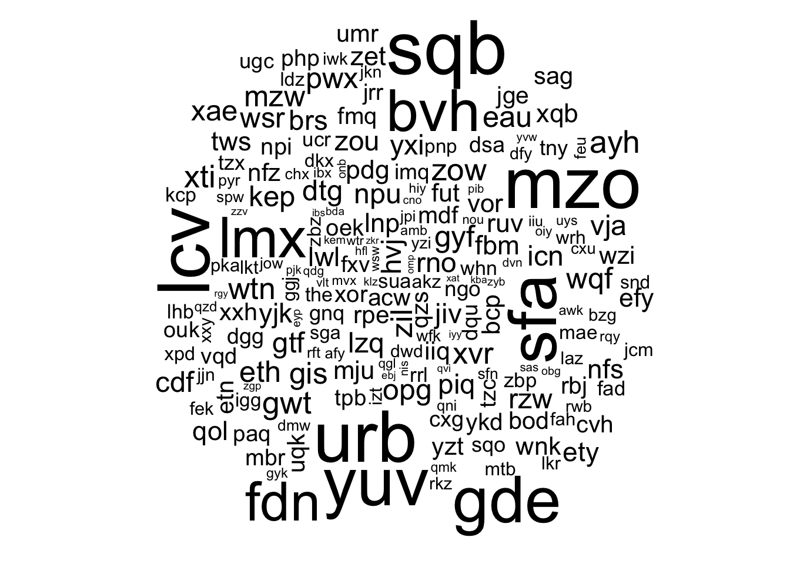
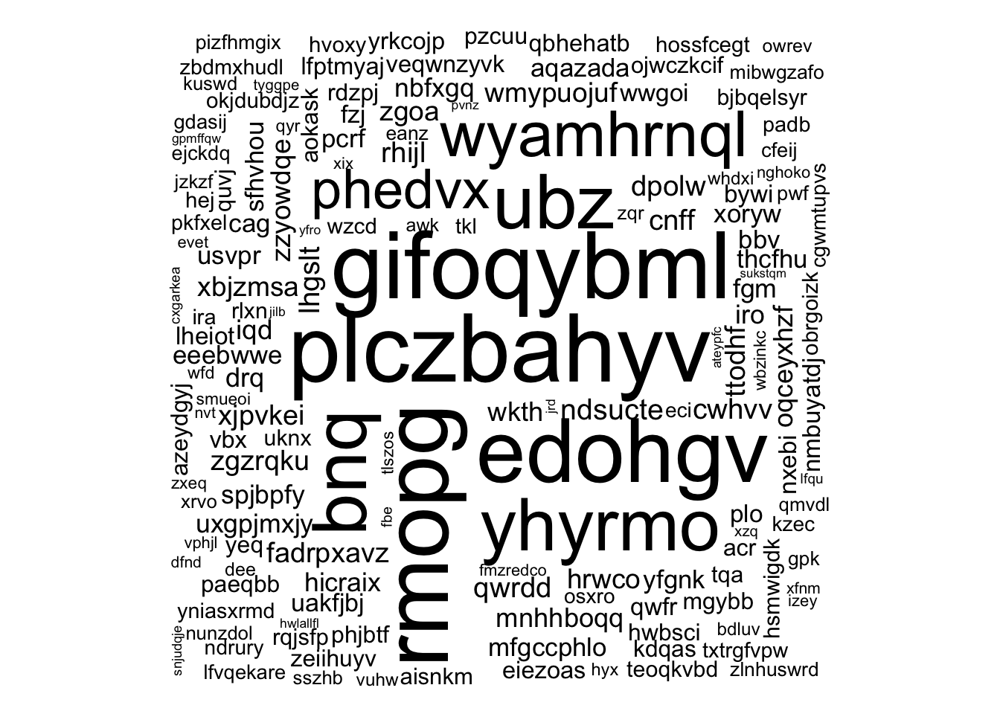
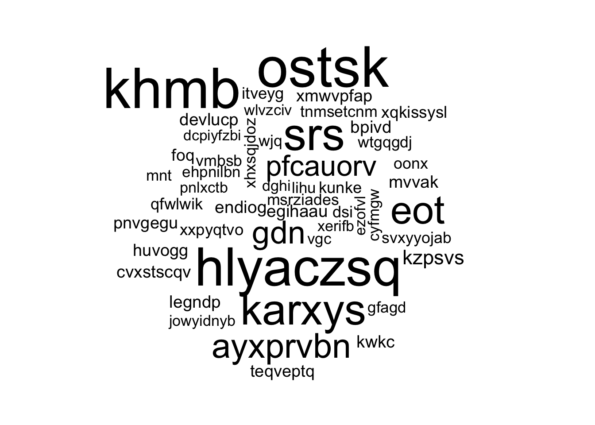
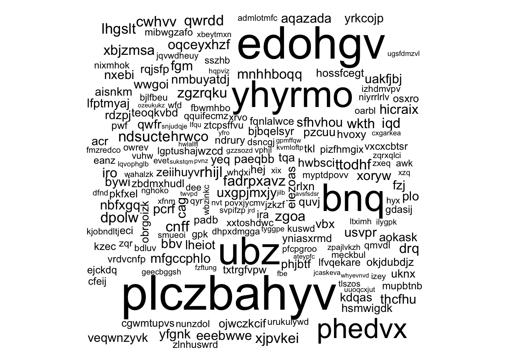
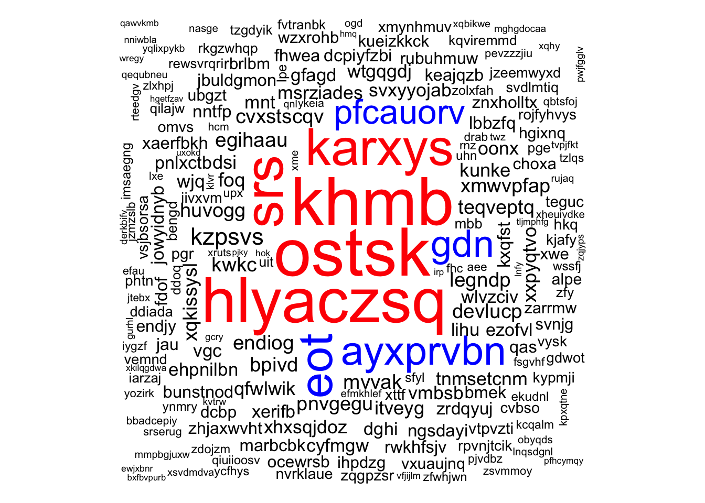
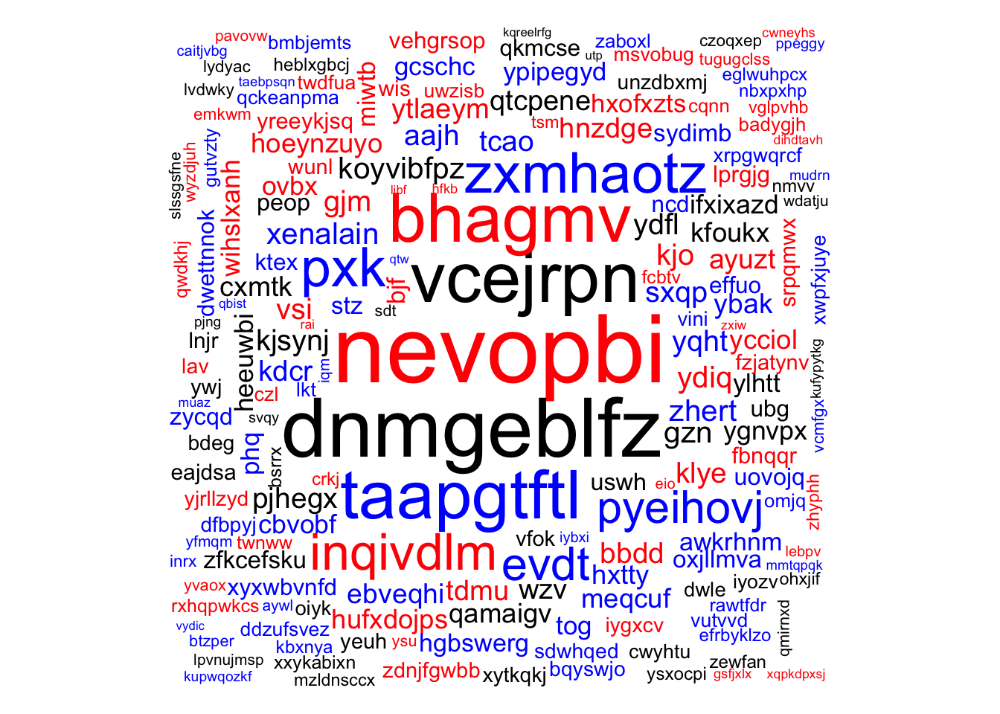
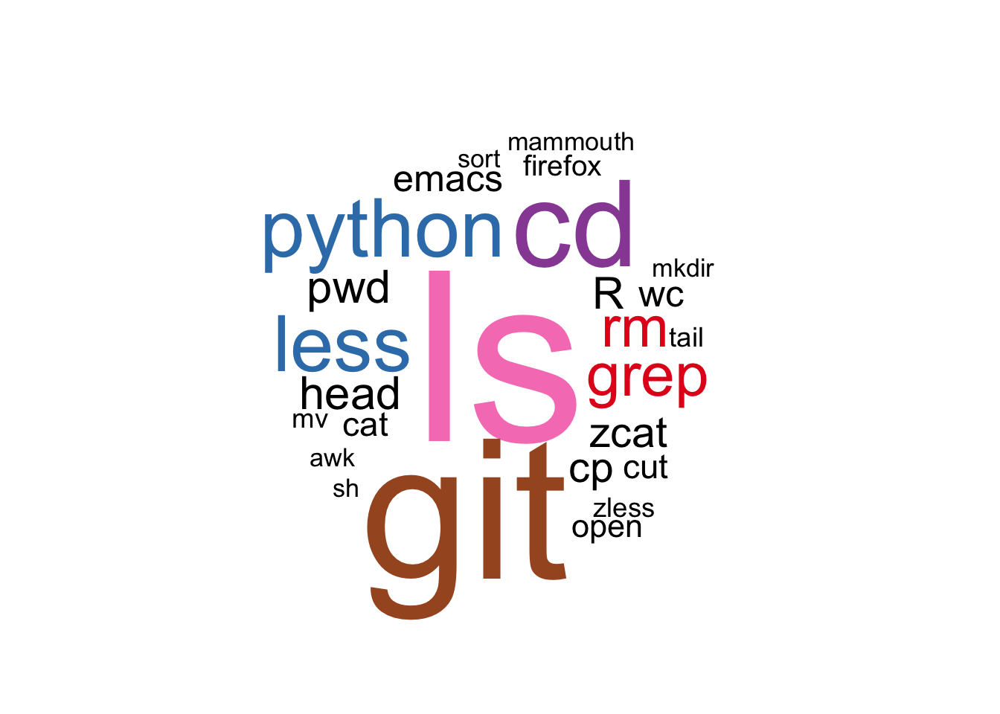
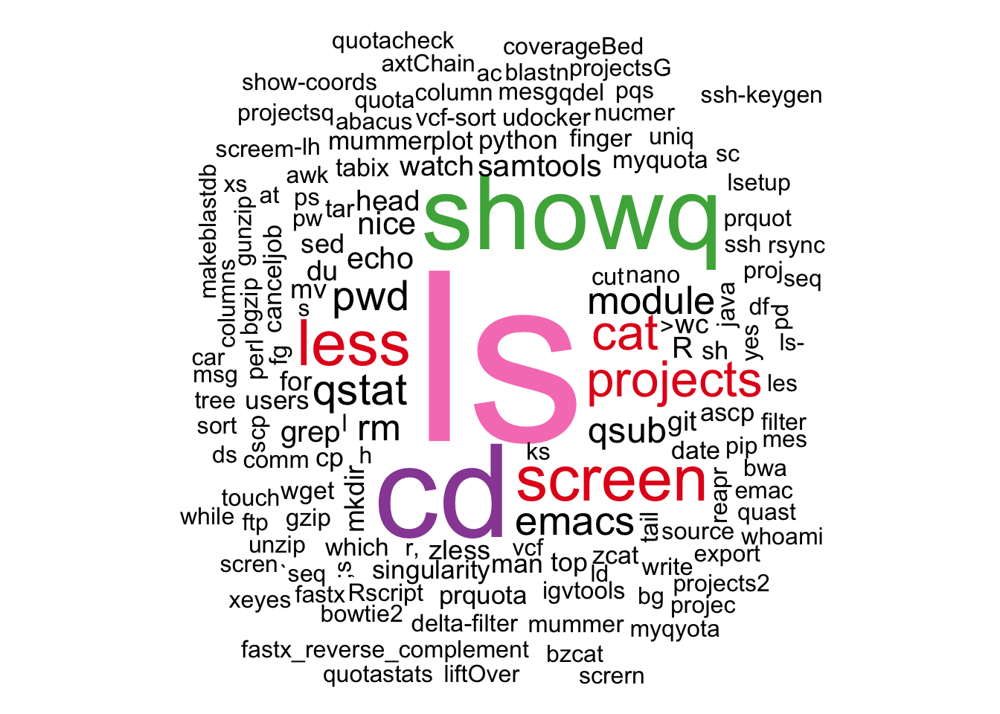

Word Cloud in R
Feb 26 2016 R plotThe wordcloud package is available on CRAN.
Fake words
I create fake words to see a bit how the command is working.
library(wordcloud)
createWords <- function(w.l = 3) paste(sample(letters,
w.l, TRUE), collapse = "")
words = sapply(1:200, function(e) createWords(runif(1,
3, 10)))
freq = c(sample(1:30, 190, T), sample(30:150, 10, T))
freq = freq/sum(freq)
wordcloud(words, freq)
## Big words in the center
wordcloud(words, freq, random.order = FALSE)
## Max word number
wordcloud(words, freq, max.words = 50)
## Rotation: proportion of 90 degree
wordcloud(words, freq, rot.per = 0.01)
## Color the most frequent words
wordcloud(words, freq, colors = c("black", "blue",
"red"), random.order = FALSE)
## Color for each word
wordcloud(words, freq, colors = sample(c("black", "blue",
"red"), length(words), TRUE), random.order = FALSE,
ordered.colors = TRUE)
Command history
I retrieved the commands from my .bash_history files (laptop and HPCs) and I want to make a word cloud showing the commands I use the most.
library(dplyr)
library(RColorBrewer)
cmds = read.table("../../data/bash-commands.tsv.gz",
as.is = TRUE)
colnames(cmds) = c("cmd", "machine")Laptop
By default the maximum history size was set to 500 commands so I don’t have the full set of commands, just the last 500. (I increased the limit, see you in 10,000 commands.)
cmds.s = cmds %>% filter(machine == "laptop", !grepl("=",
cmd), !grepl("\\.", cmd), !grepl("/", cmd)) %>%
group_by(cmd) %>% summarize(n = n()) %>% mutate(freq = n/sum(n))
wordcloud(cmds.s$cmd, cmds.s$freq, colors = c("black",
brewer.pal(8, "Set1")), random.order = FALSE, scale = c(10,
1), title = "All")
HPC
cmds.s = cmds %>% filter(machine != "laptop", !grepl("=",
cmd), !grepl("\\.", cmd), !grepl("/", cmd), !grepl("\\$",
cmd), !grepl("\\:", cmd)) %>% group_by(cmd) %>%
summarize(n = n()) %>% mutate(freq = n/sum(n))
wordcloud(cmds.s$cmd, cmds.s$freq, colors = c("black",
brewer.pal(8, "Set1")), random.order = FALSE, scale = c(10,
1), title = "All", min.freq = 1)
Good see the usual suspects ls and cd and their “typo” versions ;s/ks/ld and xs.